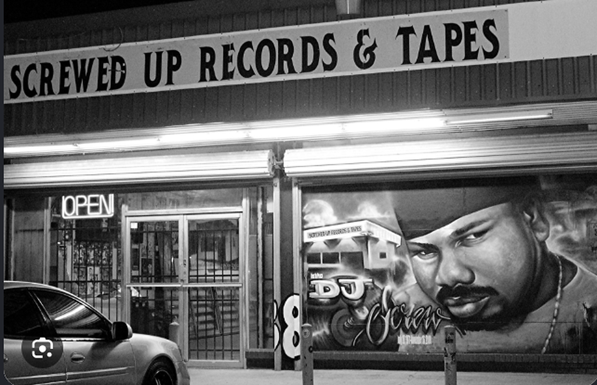

SCREWSHOP
Slow it down. Make it yours. Bars, beats, chopped records and sound packs — saved on your computer.
SCREWSHOP
Your private local studio. On a phone, enter the pairing code from your computer.
{{ authError }}

SCREWSHOPHOUSTON IN THE SPEAKERS.
SLOW IT DOWN. MAKE IT YOURS.
SLOW IT DOWN. MAKE IT YOURS.
{{ crumb }}
{{ syncLabel }}
{{ notice }}
{{ transportTitle }}
{{ beatPosLabel }} / {{ beatDurLabel }}
BARS
{{ barCount }}
AVG SYLL
{{ avgSyl }}
{{ sectionLabel }}
{{ b.n }}
Tap a coloured word for rhymes, swaps and multis. Tap a syllable count to edit that bar.
{{ studioHint }}
THE SCREW ROOMTwo records. One mix. Your pace.

TRILL · STEP {{ coachStepNo }} OF {{ coachStepCount }}
{{ coachTitle }}
{{ coachBody }}
A{{ deckAName }}
SCREWSHOP · 33⅓
SCREWSHOP
STEREO MIXER
A
B
B{{ deckBName }}
SCREWSHOP · 33⅓
BOTH DECKS
LINE UP B WITH A
NUDGE B · ◀ BEHIND · AHEAD ▶
Each deck's clock shows where you are (big number, left), time left (right) and the song's length. LOAD TRACK on each deck, tap a record to play, then blend A and B with the crossfader. PLAY BOTH / PAUSE BOTH / STOP BOTH run the decks together, MATCH B → A puts deck B at deck A's spot and speed, and NUDGE moves B behind or ahead. CUE returns to the beginning. Click a waveform twice to mark a loop and enable CHOP. SYRUP adds reverb. Slowing a record lowers both pitch and tempo.
OUTPUT · Both decks → your computer’s selected speakers or headphones. The top Record button captures your microphone.
BPM
{{ seqBpm }}
PADS — tap to play, trigger from your MIDI keyboard (notes 36–43), or LOAD a sound below
SEQUENCER · 16 STEPS
Load a sound onto each pad, tap steps to build a pattern, hit PLAY PATTERN. Plug in your Oxygen 25 (Settings → MIDI Devices) and its keys trigger the same pads live.
1 · SPLIT A SONG
Pick a file already in your SONGS library and tap QUICK or FULL. ScrewShop processes the audio on this computer. Keep it running. The first split downloads the model; your audio stays local.
{{ f.jobStatusLabel }}
No songs yet — upload one in the SONGS tab first.
2 · YOUR SOUND PACKS
Save individual WAVs, reuse an instrumental as a separate track, or download a full pack for your DAW. Full splits also save automatically under Beats / sound packs.
{{ pack.name }}Full breakdown · 7 aligned WAVs · DAW-ready ZIP
{{ st.label }}
PAD
Nothing split yet. Tap QUICK or FULL SPLIT above — make sure the background helper (see README) is running on your computer.
{{ f.when }}
Nothing here yet — upload an MP3 or WAV to build your project folder. From here you can set a file as your beat, load it onto a SCREW deck, or split it into sound packs in PACKS.
SELECTED WORD
{{ word }}{{ wordSyl }} SYLL
{{ drawerNote }}
AI AMMO
{{ aiMeter }} actions left this month
NEXT BAR — {{ lane }} LANE
{{ ammoNote }}
YOUR STUDIO GUIDE
STEP {{ helpStepNo }} OF {{ helpStepCount }}
STEP {{ helpStepNo }} OF {{ helpStepCount }}
{{ helpTitle }}
{{ helpBody }}
SETTINGS
RHYME SENSITIVITY
{{ sensNote }}
MIDI DEVICES
{{ d }}
{{ midiStatusLine }}
Local only · Audio and songs stay on this computer · Lyrics also export to data/Obsidian/Songs